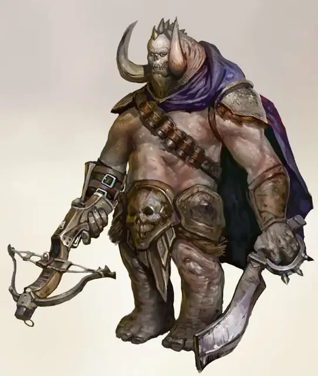

Ортон
Orthon
Большое Исчадие (Дьявол), обычно законно-злое

Класс Доспеха 17 (полулаты)
Хиты 105 (10к10 + 50)
Скорость 30 футов, лазая 30 футов
| мод | спас | ||
|---|---|---|---|
| СИЛ | 22 | +6 | +6 |
| ЛОВ | 16 | +3 | +7 |
| ТЕЛ | 21 | +5 | +9 |
| мод | спас | ||
|---|---|---|---|
| ИНТ | 15 | +2 | +2 |
| МДР | 15 | +2 | +6 |
| ХАР | 16 | +3 | +3 |
Навыки Восприятие +10, Выживание +10, Скрытность +11
Сопротивление урону холод; дробящий, колющий, рубящий от немагических атак, кроме нанесённых посеребрённым оружием
Иммунитет к урону огонь, яд
Иммунитет к состояниям отравление, очарование, истощение
Чувства истинное зрение 30 футов, тёмное зрение 120 футов, пассивное Восприятие 20
Языки Общий, Инфернальный, Телепатия 120 фт.
Опасность 10 (5900 опыта)
Бонус мастерства +4
Среда обитания Город, Подземье, Пустыня
Особенности
Сопротивление магии. Ортон совершает с преимуществом спасброски от заклинаний и прочих магических эффектов.
Действия
Инфернальный кинжал. Рукопашная атака оружием: +10 к попаданию, досягаемость 5 фт., одна цель. Попадание: 11 (2к4 + 6) урона силовым полем, также цель должна пройти спасбросок Телосложения Сл 17, получая 22 (4к10) урона ядом при провале, или половину этого урона при успехе. К тому же, провалив спасбросок, цель становится отравленной на 1 минуту. Отравленная цель может повторить спасбросок в конце своего хода и избавится от этого эффекта при успехе.
Латунный арбалет. Дальнобойная атака оружием: +7 к попаданию, дистанция 100/400 фт., одна цель. Попадание: 14 (2к10 +3) урона силовым полем, плюс цель получает один из следующих эффектов, по выбору ортона и ортон не может использовать один и тот же эффект два раунда подряд:
• Кислота. Цель должна пройти спасбросок Телосложения Сл 17, получая дополнительный урона кислотой 17 (5к6) при провале, или половину этого урона при успехе.
• Слепота. Цель получает 5 (1к10) урона излучением. Вдобавок, цель и все прочие существа, находящиеся на расстоянии 20 футов от самой цели должны успешно пройти спасбросок Ловкости Сл 17, в противном случае, они ослепляются до конца следующего хода ортона.
• Сотрясение. Цель, и каждое существо, находящееся в пределах 20 футов неё, должно успешно пройти спасбросок Телосложения Сл 17, получая 13 (2к12) урона звуком при провале, или половину этого урона при успехе.
• Окутывание паутиной. Цель должна успешно пройти спасбросок Ловкости Сл 17, иначе она будет на 1 час опутана сетью липкой паутины. Опутанное существо может выбраться, потратив действие, чтобы совершить успешный спасбросок Силы или Ловкости Сл 17. Любое существо, кроме ортона, которое попытается дотронуться до липкой паутины, должно преуспеть в спасброске Ловкости Сл 17, иначе оно тоже будет опутано паутиной.
• Паралич. Цель получает 22 (4к10) урона электричеством и должна успешно пройти спасбросок Телосложения Сл 17, иначе будет парализовано на 1 минуту. Парализованное существо можно повторить спасбросок в конце своего хода, избавившись от этого эффекта при успешном результате.
• Слежка. В последующие 24 часа, ортон знает местоположение и расстояние до своей цели, при условии, что цель находится в этом плане существования. Если цель находится в другом плане, ортон знает в каком именно, но не знает точного его местоположения.
Бонусные действия
Невидимое поле (перезарядка 4-6). Ортон может стать невидимым. Любое снаряжение, которое он носит или несёт, также становится невидимым, пока носитель решит не снять тот или иной предмет со своей экипировки. Невидимость немедленно прекратится после того, как ортон совершит бросок атаки или будет поражён атакой.
Реакции
Взрывное возмездие. Когда хиты ортона опускаются до 15 единиц или меньше, то он может взорваться. Все существа, находящиеся на расстоянии 30 футов от него, должны пройти спасбросок Ловкости Сл 17, получая 9 (2к8) урона огнём и 9 (2к8) урона звуком при провале, и половину этого урона при успехе. Взрыв уничтожает, как и само тело ортона, так и его инфернальный кинжал, и латунный арбалет.
Описание
Когда эрцгерцогу Девяти Преисподней нужно выследить, отыскать существо, или и то, и другое, а может даже и схватить его, то он обращается к ортонам. Ортоны – инфернальные охотники за головами, неустанно охотящиеся за своей добычей по всей мульти- вселенной.
Ортоны печально известны своим острым чутьём. Благодаря своей способности становится невидимым, ортону удаётся внезапно напасть на ничего не подозревающую добычу. Однако, если на него нападут, то ортон выходит из невидимости, и поэтому самой лучшей защитой против ортона – это решительная контратака.
Ортоны, превыше всего, ценят опасные погони и острые ощущения от боёв с глазу на глаз. Прежде всего, ортон остаётся верен своему эрцгерцогу, однако, если у него нет никаких срочный поручений, ортон может поработать на любого, кто предложит ему поймать перспективную добычу, который смог бы сражаться с ним на равных. Поскольку они путешествуют по многим местам, нет лучше проводников по слоям Девяти Преисподней, чем ортоны.